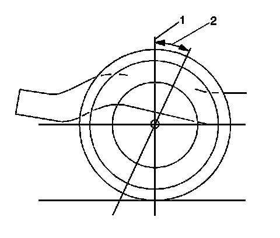
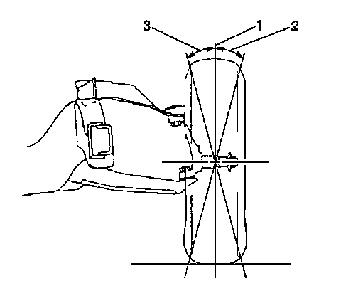
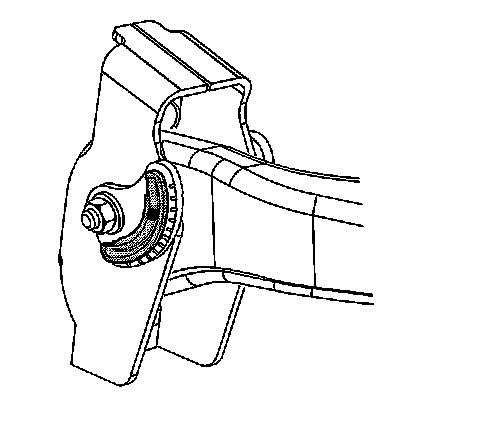

Front Caster and Camber Adjustment
Front Caster and Camber Adjustment
Important: Caster measurements are now relative to ground.
1. The caster and camber adjustments are made by rotating the offset cam bolt and the cam in the slotted frame bracket in order to reposition the control arm.
Important: Before adjusting the caster and camber angles, jounce the front bumper 3 times to allow the vehicle to return to normal height. Measure and adjust the caster and the camber with the vehicle at curb height. The front suspension Z dimension is indicated in Trim Heights. Refer to Trim Height Inspection.
2. For an accurate reading, do not push or pull on the tires during the alignment process.

3. Determine the caster angle (2).

4. Determine the positive camber (2) or negative camber (3) angle.
5. Remove the pinned adjusting cam insert. Do not reinstall the cam insert.
6. Loosen the upper control arm cam adjustment bolts.

Notice: Refer to Fastener Notice.
7. Adjust the caster and the camber angle by turning the cam bolts until the specifications have been met. When the adjustments are complete, hold the cam bolt head in order to ensure the cam bolt position does not change while tightening the nut.
Tighten the cam nuts to 190 N.m (140 lb ft).
8. Verify that the caster and the camber are still within specifications. Refer to Wheel Alignment Specifications. When the caster and camber are within specifications, adjust the toe. Refer to Front Toe Adjustment.